Yedi Kilise
Yedi Kilise, Erek Dağı’nın batı yamacında kurulu bulunan Yukarı Bakraçlı köyü içerisinde yer alıyor. Geçmişi 8. yüzyıla kadar giden bu yapı, adından da anlaşılacağı üzere 7 kilisenin birleşiminden oluşuyor (bu konunun çok da net olmadığını söylemek lazım, bazı kaynaklar 5 bazı kaynaklar 3 kiliseden bahsediyor, kilisenin adının neden yedi kilise olduğu ise bence bir muamma zira eski adı böyle değil). Kilisenin Ermeniler zamanında kullanılan adı ile ilgili bir kaç farklı varyasyon görünüyor: Varagavank, Warak Wank, Varak Surp Harç Manastırı, St. Cross Monastery of Varak gibi. Varak kelimesinin Erek dağının Ermenice’deki adı olduğunu biliyoruz, Vank da kilise anlamına geliyor, Erek Dağı Kilisesi diye Türkçeleştirmek mümkün iken ilginç bir şekilde yedi kilise denilmiş ama yedi kiliseyi gösterin desek gösterecek kimse yok.
Her ne kadar kilise desek de kiliselerden oluşan bir manastır burası, internette manastırın çok eski fotoğrafları da bulunuyor, etrafı kalın ve yüksek duvarlarla çevrili bir yapı kompleksi aslında.
Manastırın aynı zamanda Van başkiskoposuna da ev sahipliği yaptığını ve görece oldukça zengin bir manastır olduğunu da söylemek lazım.
Kiliseye ulaşım kolay, şehre 10 km mesafede bulunuyor. Yedi Kiliseye kadar giden asfalt bir yol bulunuyor. Yedi Kilisenin de içerisinde yer aldığı Yukarı Bakraçlı köyü yeşillikler içerisinde yer alıyor ve bol miktarda tatlı su kaynağına sahip. Van şehir merkezini kuş bakışı görecek kadar yüksek ve hakim bir noktada inşa edilmiş.
Ne yazık ki kilise bugün kaderine terk edilmiş ve yıkılmaya yüz tutmuş. Kapısı kilitli, anahtar köyde bulunuyor, sorarak kapıyı açmalarını rica edebilirsiniz, en azından bu biçimde de olsa korunuyor.
Kilisenin içerisinde girince ne kadar da ihtişamlı bir yapısı olduğunu görüyorsunuz, nefes kesici bir taş işçiliği var, duvarlarda silik de olsa fresklar hala duruyor, kayaya işlenmiş semboller ise çok düzgün.
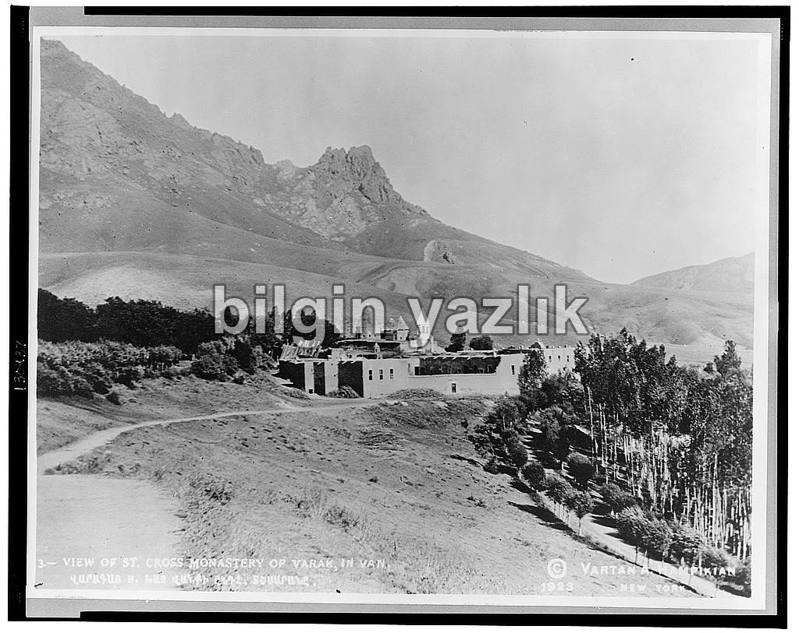
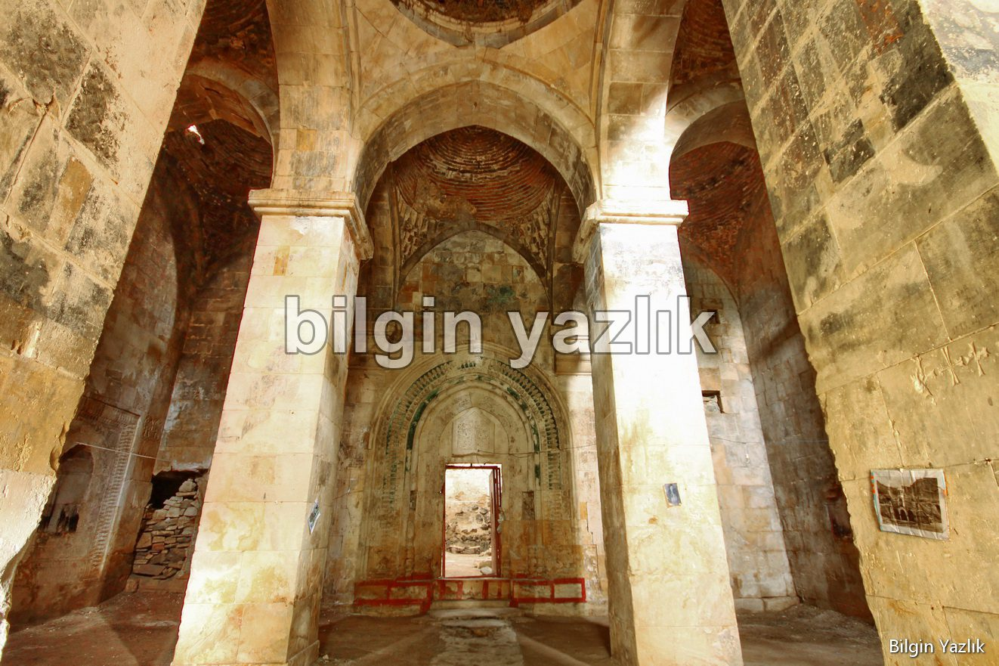
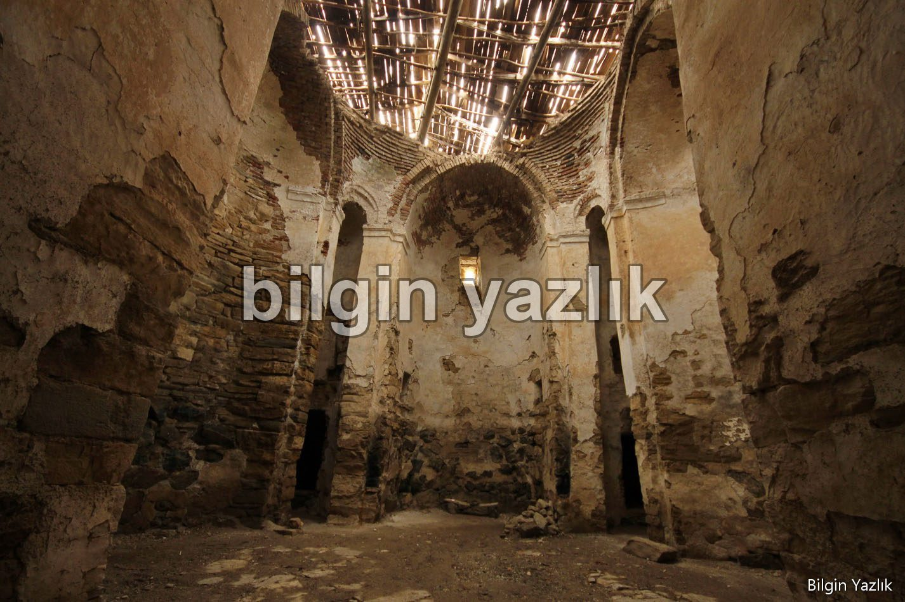
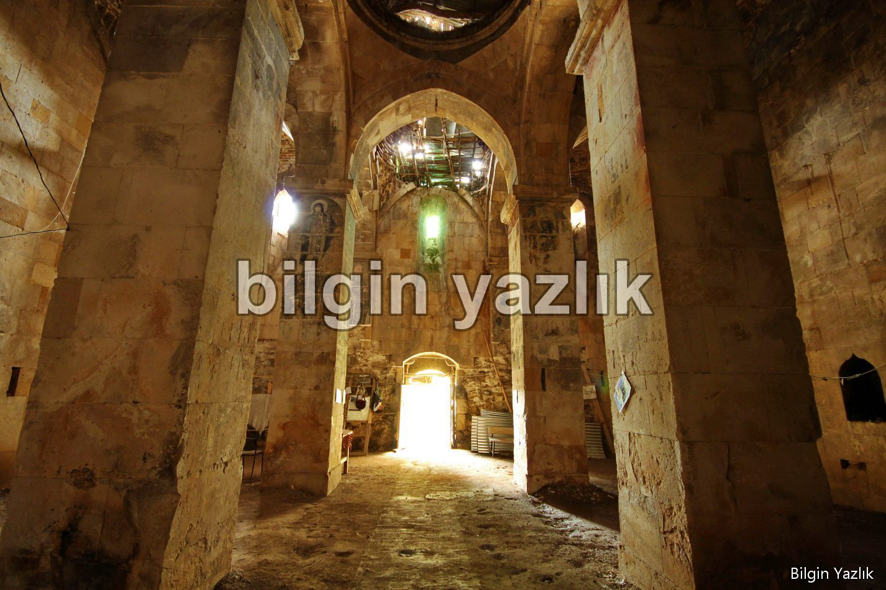
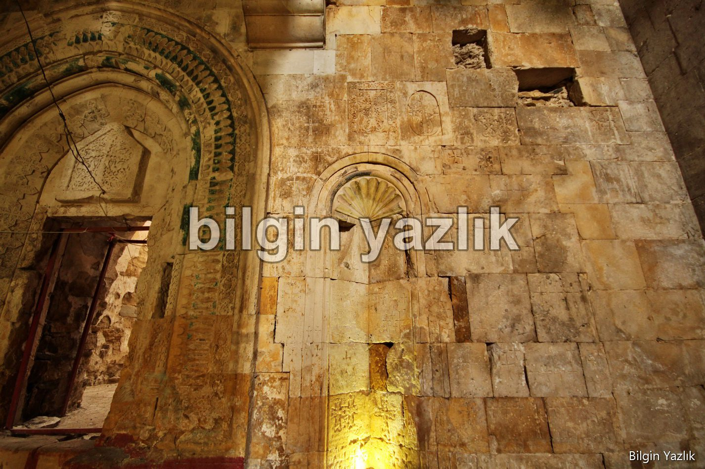
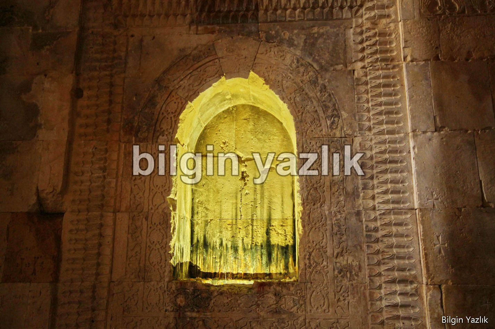
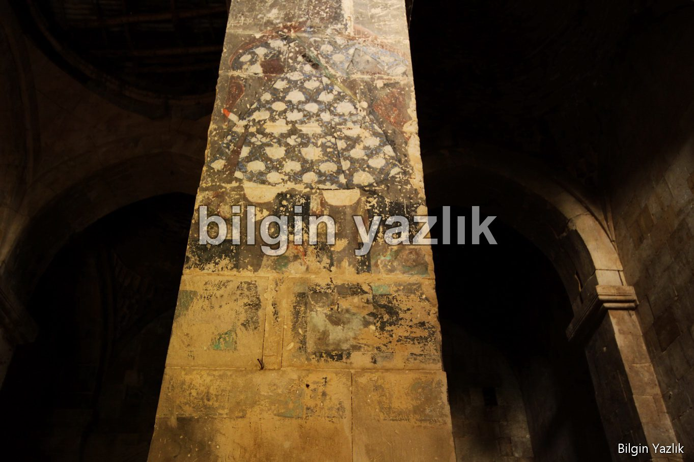
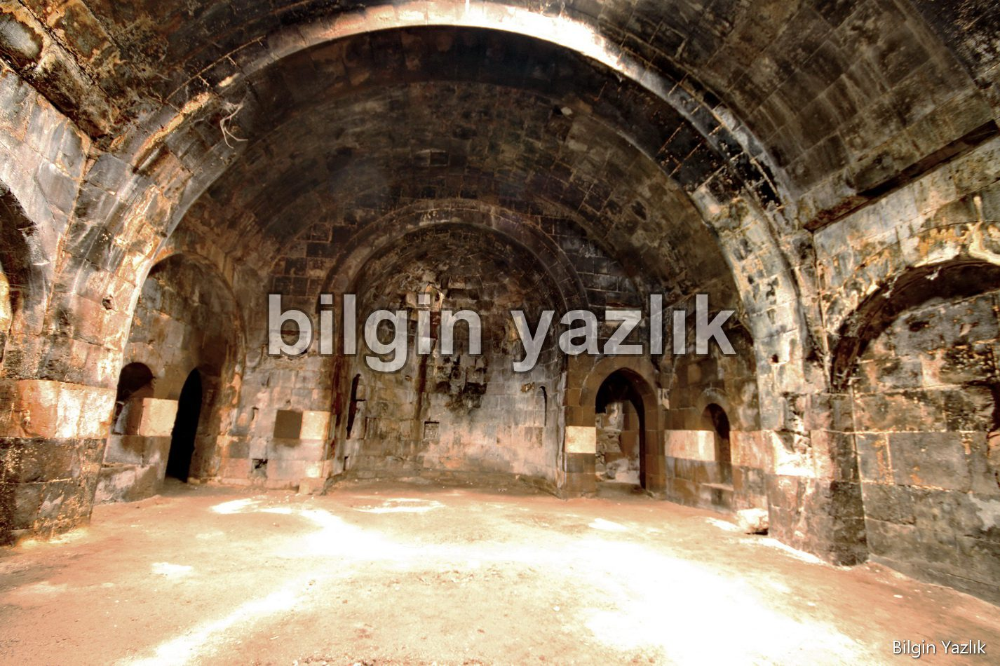
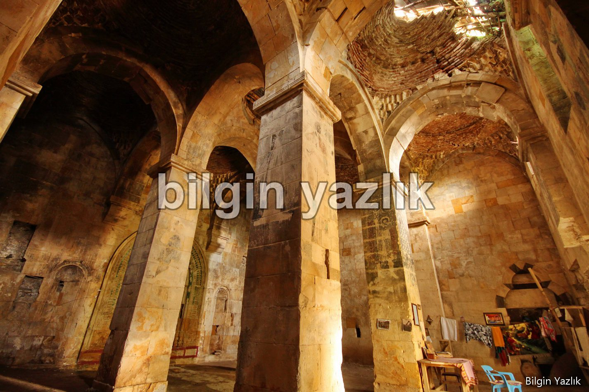
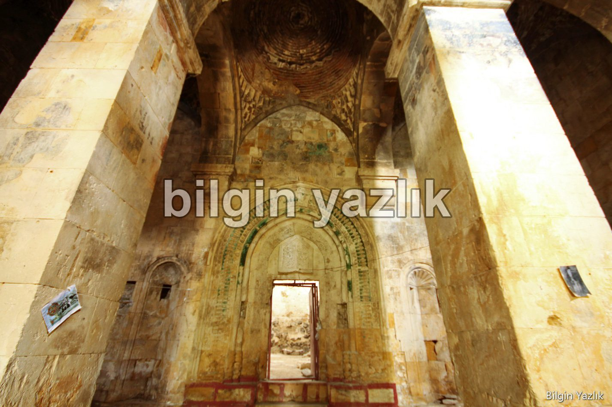
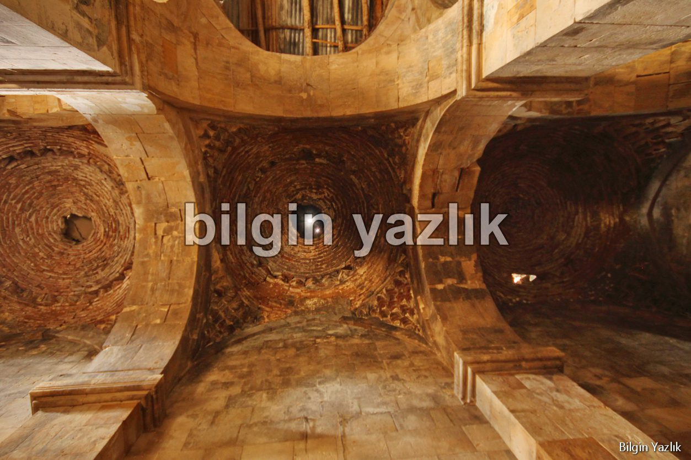
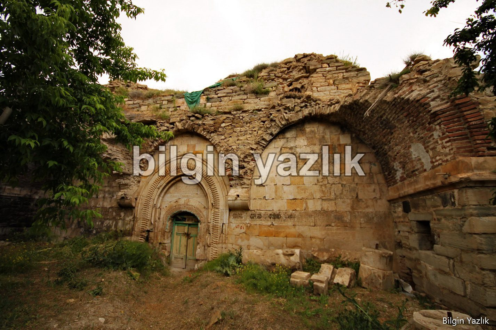
Bu yazı taliyol arşivinden taşınmıştır. · özgün kayıt